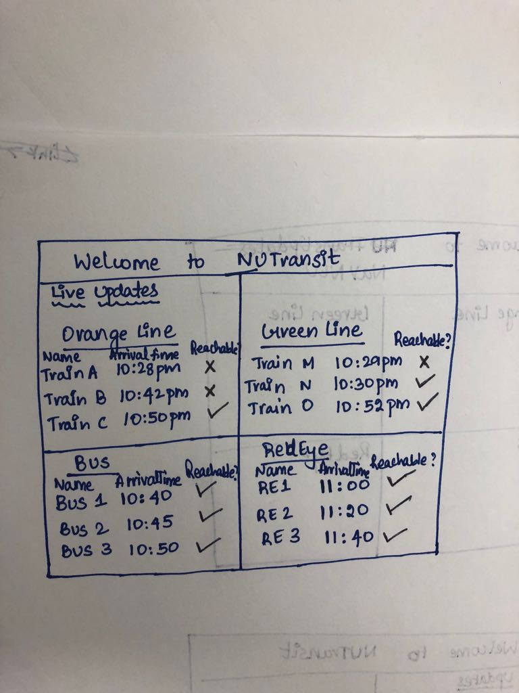
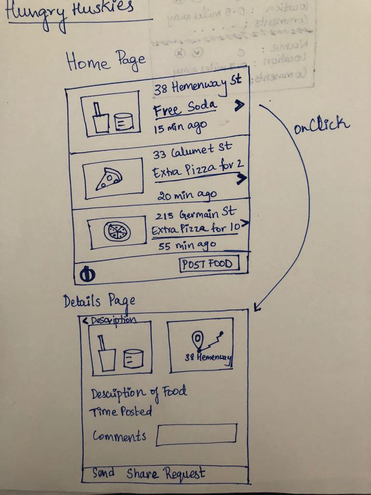
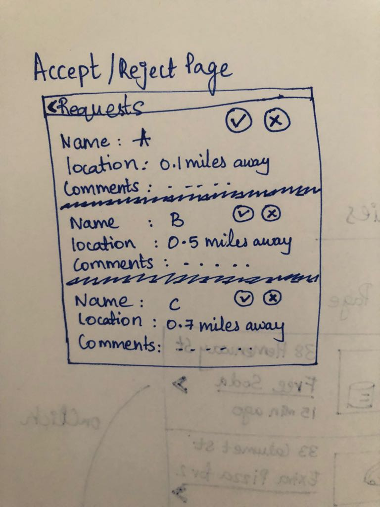
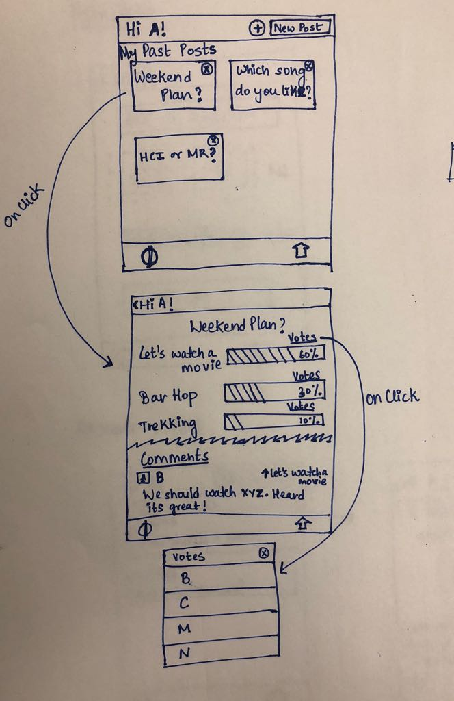
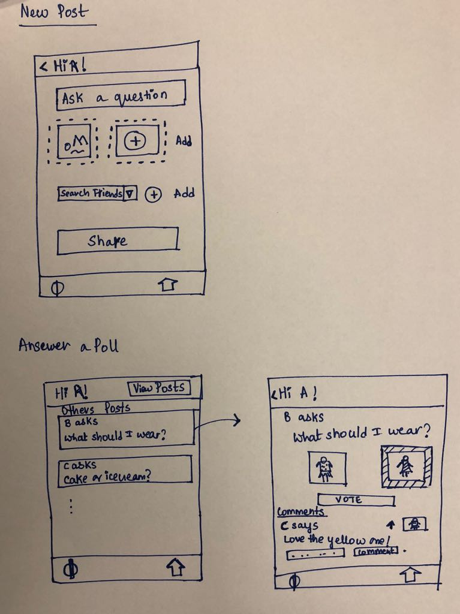

Individual homework - 1
Proposal 1 - What do you think?
Project Idea
If you are having a hard time making a choice and you want to know what your friends think about it, you can use this app
to do just that. For example, if you cannot choose what dress you want to wear to a party, upload pictures of your top
choices, share with your friends and leave it to them to decide what suits you the best! You could use the app to get a
second opinion on literally anything - from cereals to courses to cars.
The idea behind proposing this app was that people(or students) generally tend to seek validation from others when they
are confronted with tricky situations. Getting a popular opinion from people helps simplify making a decision. The app
is designed such that person A can upload multiple pictures/audio/video clips and then adds others , say
person B and person C to vote. Person B or C can see the question A posted. Even if multiple choices for the question
are present, they see only two at once. After they choose an option, the rejected one will be replaced by a new one and
so on until all the options are exhausted. Person B and C add comments supporting their choice as well.
Person A can now see the popular choice and other votes.
Technologies and Comparison with existing systems
Technology
I would like to implement this as a mobile (android) app rather than a website as it will be make it easier to upload pictures,
audio and video clips as soon as they are captured.
Existing Systems
1) Instagram, Facebook and Twitter let users add polls to their stories but doesn't let the user choose who to share it with.
By default it would be shared with everyone who follows you or just a private message to one person which is not ideal if you want
to limit your question to an intimate group and initiate a discussion to evaluate the options.
2) Facebook and Instagram limit the user to type a question and two text choices for it. However this app lets users
upload multiple pictures/audios and video clips as options to the question.
3) This is not a feature that comes with a social networking website but an app in itself that can be used without being
active on other social media.
4) Unlike other polling applications (like PollDaddy , SurveyMonkey etc), the features of this app will be free of cost
and has the options of comparing audio and video files as well.
Key Benefits
1) Helps make an well informed decision after evaluation from trusted sources.
2) Easy to use and upload images/audios and videos as it is a mobile app.
3) Versatile - can be helpful for making any kind of decision (simple or complicated)
4) Not just another polling app and free of cost.

Proposal 2 - NUTransit
Project Idea
This web application is a dashboard with live updates on nearest transport options available and whether you can reach
them on time. For NU students, the options for public transport are Orange Line, Green Line , Bus and RedEye.
Technologies and Comparison with existing systems
Technology
I would like to implement this as a MEAN stack web application using Google Distance Matrix and MBTA APIs
Existing Systems
1) Google Maps shows the fastest route and the transport options available. However there is no comparison between these
options at a quick glance. The user has to mentally calculate if he will make it on time to catch the train and switch
between tabs while doing so.
Key Benefits
1) Designed to target and solve the problems of a specific group - NEU students that use public transport
2) Helps students select the transport choice at a glance.


Proposal 3 - Hungry Huskies
Project Idea
If your party just ended and you have extra food, notify students around you to collect it and enjoy their meal.
Technologies and Comparison with existing systems
Technology
I would like to implement this as a mobile (android) app that supports sending notifications to other mobile devices.
Existing Systems
1) Feedshare is an app that sends notifications whenever free food is posted anywhere on the NEU campus.Hungry Huskies
extends this concept beyond the campus within a radius of 1.5 miles.
2) Hungry Huskies has the option of accepting/rejecting who you want to share food with.
Key Benefits
1) Leftover food management extended to off-campus housing.
2) Socialize with students who live near you.

